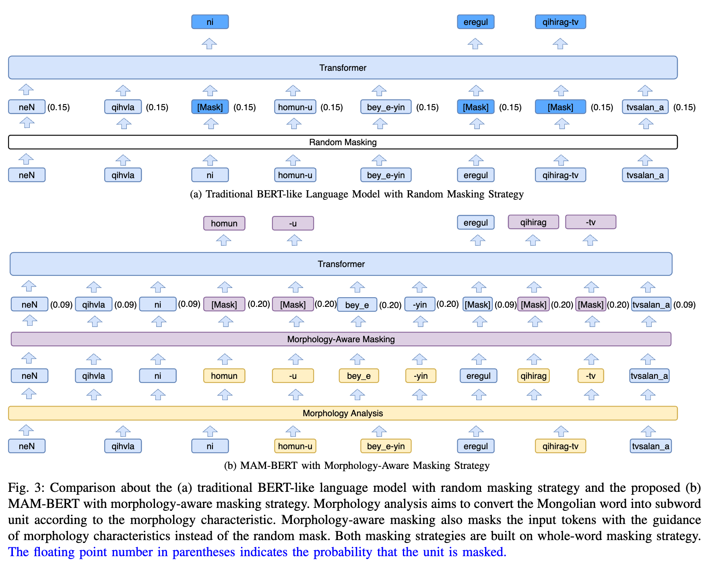

Text-to-Speech for Low-Resource Agglutinative Language with Morphology-Aware Language Model Pre-training
Abstract
Text-to-Speech (TTS) aims to convert the input text to a human-like voice. With the development of deep learning, encoder-decoder based TTS models perform superior performance, in terms of naturalness, in mainstream languages such as Chinese, English, etc. Note that the linguistic information learning capability of the text encoder is the key. However, for TTS of low-resource agglutinative languages, the scale of the $<$text, speech$>$ paired data is limited. Therefore, how to extract rich linguistic information from small-scale text data to enhance the naturalness of the synthesized speech, is an urgent issue that needs to be addressed. In this paper, we first collect a large unsupervised text data for BERT-like language model pretraining, and then adopt the trained language model to extract deep linguistic information for the input text of the TTS model to improve the naturalness of the final synthesized speech. It should be emphasized that in order to fully exploit the prosody-related linguistic information in agglutinative languages, we incorporated morphological information into the language model training and constructed a morphology-aware masking based BERT model (MAM-BERT). Experimental results based on various advanced TTS models validate the effectiveness of our approach.

TTS Evaluations
| GT | FastSpeech2 (Mel + HiFi-GAN) |
BERT + FastSpeech2 (Mel + HiFi-GAN) |
MAM-BERT + FastSpeech2 (Mel + HiFi-GAN) |
|---|---|---|---|
Sample 1: iNgiged buhu hvxigvn-v hebqiyen-du xinjilehu vhagan tEgnig mergejil-un uileqilegen-u twwr-i alhvm alhvm-iyar buridugulun_e (Latin Sequence) | |||
Sample 2: ene yabvdal-vn job bvrvgv gajigv xilvgvn-v tvhai jwhiyagqi dvr_a-bar-iyan xigumjiley_e geju bwdwhv ugei (Latin Sequence) | |||
Sample 3: wdw yamar qag bwljv endehi-yin ajil hiri jerge hundu baig_a-yi qi medehu heregtei (Latin Sequence) | |||
Sample 4: talabvr emhi jambarag_a-ban aldajv eregtei emegtei ijagvrtan erhimted jug qig ugei guyulduju jigvtajagan_a (Latin Sequence) | |||
Sample 5: jalagv deslegqi bardam alhvgsagar hatabqi alhvn wrwjv irehu-du egelji-yin svbilagqi iniyegseger vgtvn abvl_a (Latin Sequence) | |||
Sample 6: tabag-tai idege-eqe amsahv-dagan ehileged xihir metu taNsvg amtatan-i mwNgwl homun ehileju amsadag ugei (Latin Sequence) | |||
Sample 7: nige tabag HvisiyaN bvrqag ali geju jaNgvida-dv heleged yisun jwgws gargajv jergeqegulun talbin_a (Latin Sequence) | |||
Sample 8: jobhen buhu aNgi-bar huqu hamtvran qirmaibal bide ene vdagan-v vrvldvgan-dv qwhwm teriguleju bwlhv-yvm (Latin Sequence) | |||
Sample 9: bariqagan-v ajilqid gedeg medegelel-un vran jwhiyal-dv gwwl bwlhv gvrban tal_a-yin baidal-i dursulen twgaqijai (Latin Sequence) | |||
Sample 10: torol buri-yin twli biqig-i nairagvlhv-dv yehe tolob dwwrahi metu hwyar jarqim-i barimtaladag bila (Latin Sequence) | |||